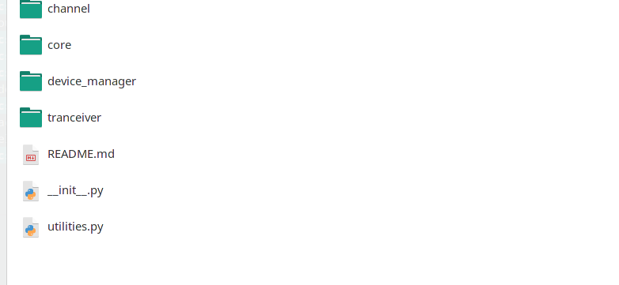

- channel
- core
- device_manager
- tranciever
- utilities.py
-
channel:
- fiber.py:定义了非线性光纤，用分布傅里叶实现
- EDFA.py:定义了恒增益EDFA和恒功率EDFA两种类型的EDFA
- ROADM.py: 定义了WSS函数，具体原理参照附录，理论背景
- impairments.py： 定义了一些线性损伤，例如PDL，PMD,ROP等
-
core:
- Signal.py:定义了基本的信号类;基类为Signal，其余两个类QamSignal和WdmSignal都继承自基类
- constl.py:实现了Qam符号的映射
-
device_manager:
- device.py:主要实现了CUDA设备和CPU设备的自动转换，通过装饰器 device-selection 实现
- channel
- core
- device_manager
- tranciever
- utilities.py
tranciever:
- dsp.py:实现了收发端的DSP函数
- instruments.py:实现了部分器件，ADC,DAC,Laser等
以下详细介绍每个部分的API
初始化流程 1
- 根据传入的SignalSetting 设置信号的相关属性，包括 symbol_rate, symbol_number (仿真的符号点的个数)，qam_order, pol_number (2 为偏振复用) ，会自动生成随机序列，并映射为QAM符号
- 调用Signal类的构造函数，将产生的samples 赋值给self，并根据SignalSetting.device 的值，自动选择CPU或者CUDA设备
上述流程完成后，会生成QamSignal对象，并有以下属性和方法:
属性
- sybmol_rate [Baud]
- center_freq [Hz] 中心频率
- sps:samples per symbol
- symbol:QAM 符号
- samples:对符号上采样sps之后的ndarray
def to(self,device)->None:
'''
根据device的值，将samples移动到合适的设备上
'''
def dtype(self)->ndarray.dtype:
'''
返回samples的数组类型
'''
def normalize(self)->self:
'''
将每个偏振的功率规一化到1
'''
def power(self)->float:
'''
以w为单位返回信号的总功率
'''
@property
def shape(self):
return self.samples.shape
def float(self)->self:
'''
convert complex128 to complex64
'''
@property
def fs(self):
return self.symbol_rate * self.sps